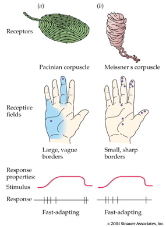

Topic 13 Sensory and motor systems
Sensory systems
My smartphone and me…

Figure 13.1: https://www.trustedreviews.com/wp-content/uploads/sites/54/2023/02/Samsung-Galaxy-S23-Ultra-hands-on-10.jpg
Smartphone design goals
- What information do your users need to acquire?
- Why do they need to know it? In what context, for what purpose?
- What types of information does your device need to gather, through which channels?
My turn…
- What information do I need to acquire?
- Why do I need to know it? In what context & for what purpose?
- What types of information do I need to gather, through which channels?

Somatosensation
- Sensations about the body
Types of somatosensation
- Internal (interoceptive)
- Where/how is my body positioned? How do I feel?
- Proprioception (perception of the self)
- External (exteroceptive)
- What’s in the world?
- Where is it?
Internal senses
- Kinesthesia
- Body position
- Movement
- Pain
- Vestibular sense
- Head position (relative to gravity)
- Head movement (rotation, translation)
Vesibulo-ocular response (VOR)

Figure 13.2: Vestibulo-ocular response (VOR): https://www.mcgill.ca/vestibular-gazecontrol-lab/files/vestibular-gazecontrol-lab/images/222_0.gif
- Keeps eyes steady when head moves
Figure 13.3: Castilla (2007)
- Can’t walk & text without it
Figure 13.4: Top Tens World (2017)
External senses
- What’s out there and where is it located?
- Cutaneous (receptors in the skin) senses
- Hot, cold
- Pressure
- Vibration
- Plus kinesthesia (why?)

- Receptors specialize in different info types, properties


Combined thermo (heat/cold) and chemo-receptors
- Taste dimension -> chemo receptor ≠ temperature dimension
- Why are minty foods cool?
- Why are spicy foods hot?
- Receptors that sense chemicals AND temperature

- Menthol/mint receptor (CMR1)
- Also signals “cool” temperatures
- Vanilloid Receptors (TrpV1/VR1, VRL1)
- Respond to capsaicin (in peppers), allyl isothiocyanate (in mustard, wasabi)
- Also signal “hot” temperatures

Figure 13.5: Scoville heat scale: https://www.savoryexperiments.com/wp-content/uploads/2020/12/Scoville-Heat-Scale-Savory-Experiments2.jpg
Size/speed trade-off
- Not all info travels at the same speed
- Thicker axons -> faster
- Myelinated axons -> faster

- Kinesthesia (from muscles and joints) the fastest
- Pain/itch slow
From skin to brain
- Cutaneous receptors ->
- Dorsal root ganglion in spinal cord ->
- Ventral posterior lateral thalamus ->
- Primary somatosensory cortex (S1) ->
- Post-central gyrus of parietal lobe


Functional segregation in spinal cord

Figure 13.6: http://teachmeanatomy.info/wp-content/uploads/Overview-of-the-Dorsal-Column-Medial-Lemniscal-Pathway-1.jpg

Figure 13.7: http://teachmeanatomy.info/wp-content/uploads/The-Spinothalamic-Tracts-Ascending-Sensory-1.jpg
- Separate pathways for different information types
- Dorsal column/medial leminiscal pathway
- Touch, proprioception
- Spinothalamic tract
- Pain, temperature
Somatatopic maps in thalamus & cerebral cortex

- Some areas of skin activate disproportionately size areas of the cerebral cortex

Figure 13.8: Somatosensory homunculus
- Smallest discriminable distance between two-points (two-point threshold) varies

- Occupational Therapists (OTs) measure this
Figure 13.9: OTGeddie (2017)
- S1 maintains functional segregation of input types

Phantom Limbs
Figure 13.10: cogmonaut (2010)